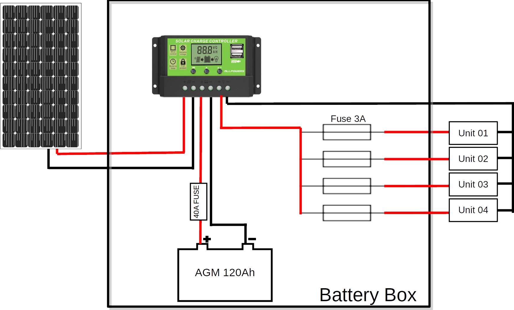
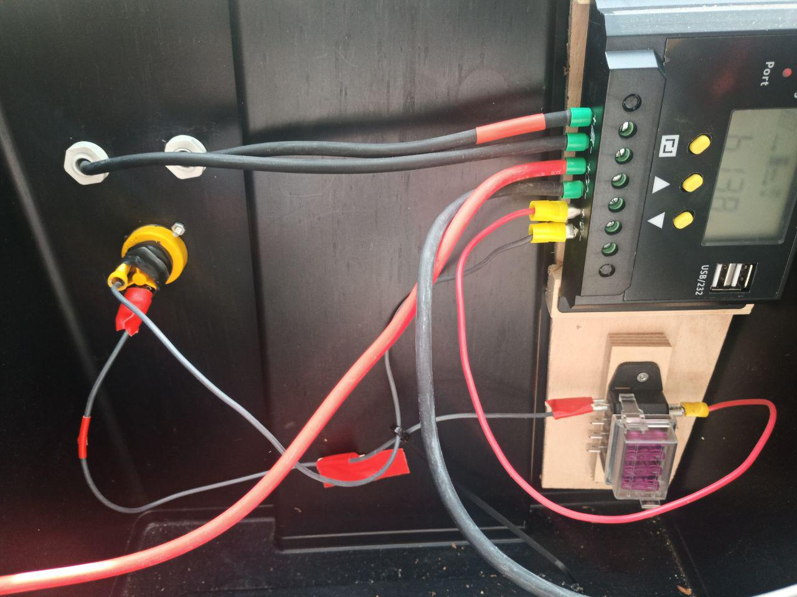
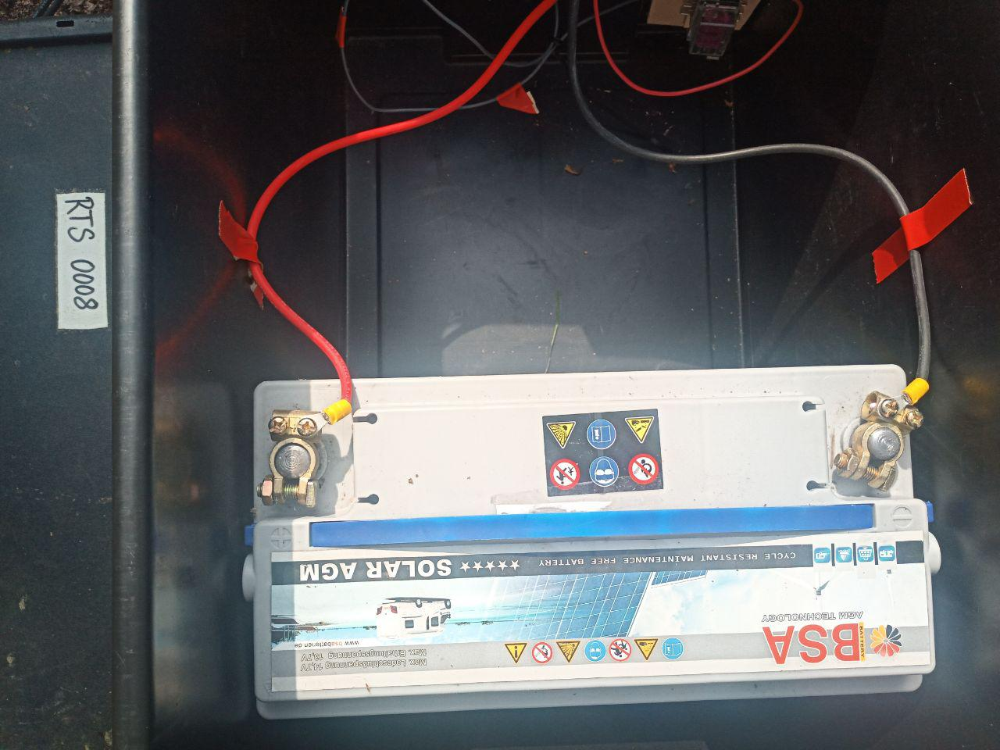
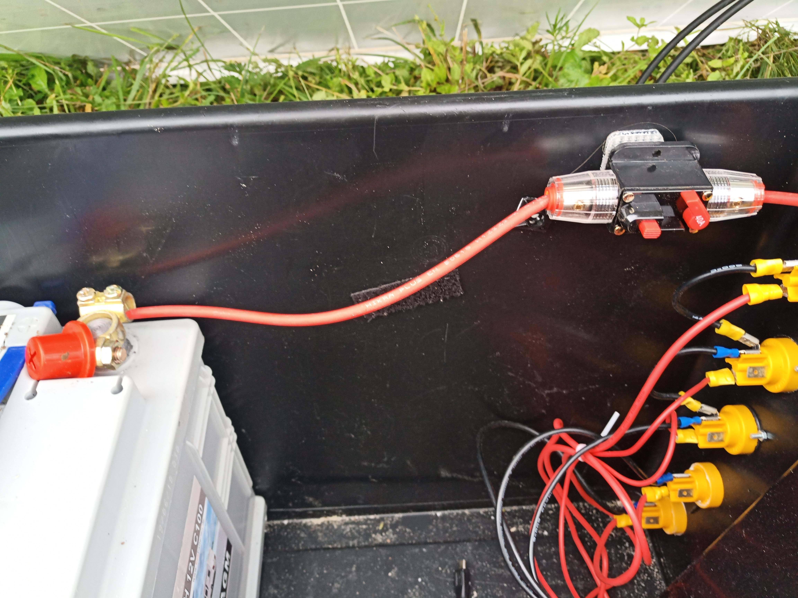
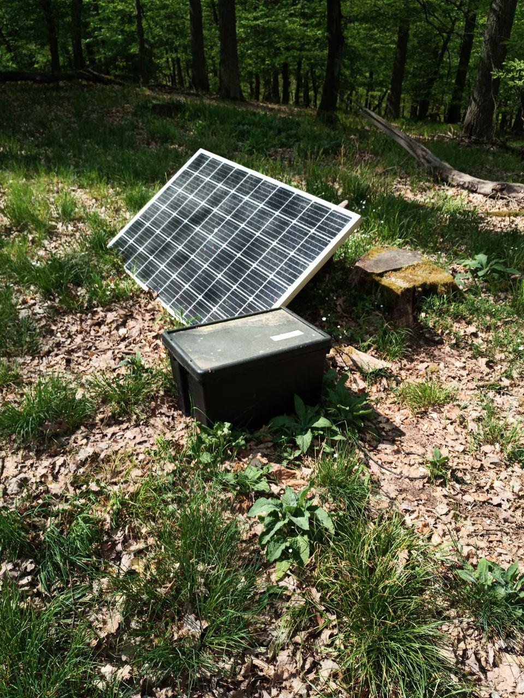
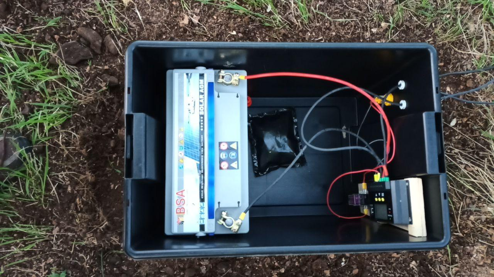
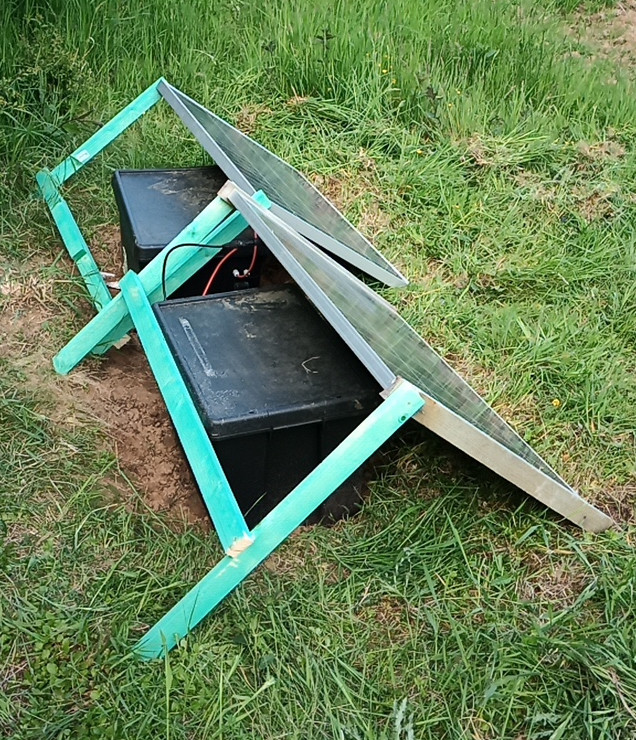
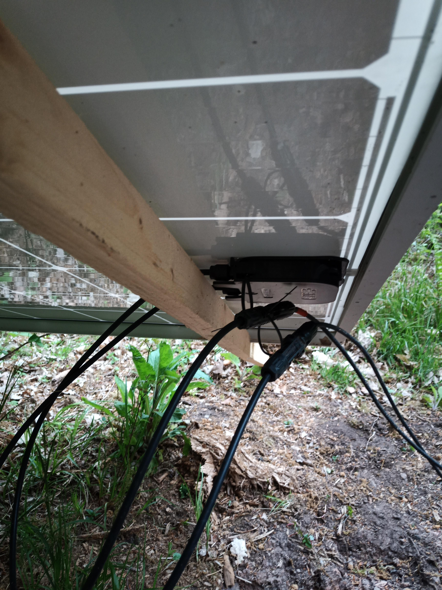
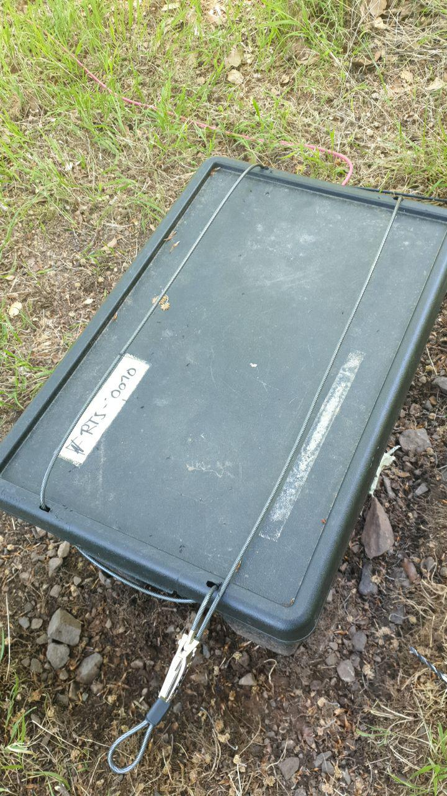

Microclimate Sensors & Power supply Units
Tutorial: EON Summer School 2024
The sensors from Fine Offset are re-branded and partly modified by the resellers. This article deals with sensors from the german re-seller froggit and the US re-seller ecowitt. More precise the DP-/GW SmartHubs WiFi Gateway with temperature, humidity & Pressure which is developed by fine offset. The unique selling point of the LoRa-Wifi gateway is the extraordinarily extensive possibility of connecting radio-bound sensors.
Features
Currently, depending on the gateway, a maximum of 8 sensors of the following types can be connected at the same time:
- DP150/WN51 soil temperature sensors,
- DP50/WH31 multi channel temperature and humidity sensors
- WN34 wire probe thermometer
- DP10/WN35 leaf wetness sensors
- DP100 soil moisture sensors;
a maximum of 4:
- DP200/WH41/WH43 PM2.5/PM10 sensors
- WH45 Water leak sensors
a maximum of 2:
- DP250/WH45 CO2 / PM2.5 / PM10 / temperatur / moisture sensor
- DP60/WH57 Lightning sensor
For the basic weather parameters as rain, wind vector insolation temperature and humidity one of the compatible outdoor basis units as the DP1100 or WH3000
Calibration Concept
The low budget sensors are usually lacking of a stable measurement quality. To obtain reliable micro climate data a two step calibration process is suggested.
- The measurements of all sensors (preferably in a climate chamber) will be statistically analysed to identify sensor which produce systematic and significant outliers.
- The sensors are calibrated against an operational running high price reference station in the field.
Power supply Unit
The power supply box is designed to safely supply a range of demanding energy consumers with power. It consists of industry standard components.
Switching scheme
The battery box has a very simple design. Besides the cabling, it contains a solar charge regulator, a fuse panel for the protection of the consumers and an AGM 120aH battery.
 ## Components * Sealable, durable Wham Bam Heavy Duty Box, 62 L, 59,5 x 40 x 37 cm, PP Recycling Plastic Wham Bam Box. The “Wham Bam Box” made of recycled PP plastic was chosen for its extreme mechanical strength and almost complete biochemical resistance. The bad temperature spectrum for thermal stability is from approx. -10 -140 °C., it is acid and alkali resistant and waterproof. By additionally equipping the box with a fire protection mat, the almost airtight closure offers a virtually complete reduction of fire load inside and outside the box. * 12V deep-cycle battery BSA Audio Solar Technologie 120 Ah 12V C100 * 3 x Neutrik powerCON TRUE1 NAC3FPX outlets and Neutrik SCNAC-FPX sealing cover. * Fuse Box for car fuses up to max. 15A per fuse, maximum 30A per fuse box, With sealed cover, splash-proof, Material: PA6.6, 12 connections on the side * Nominal voltage: 32 V/DC * Nominal current (per output): 15 A * Temperature range: -20 - +85 °C * Connections: Flat plug 8x 6,3 x 0,8 mm lateral * Solar charge controller, 20A (ALLPOWERS, available from various brands) Specification ALLPOWERS
Wiring
- Battery to solar charger:
- Pole terminal connectors (+ and -)
- 6 mm2 cables (red and black)
- 2 x Crimp cable shoes
- Solar panel to solar charger
- MC4 photovoltaic connectors (+ and -) Weidemüller
- 6 mm2 cables (red and black)
- 2x Crimp cable shoes
- Solar charger fuse box outlets
- 6 x 1,5 mm2 cables, red
- 6 x 1/4’’ FASTON terminals Fuse Box
- 3 x 1,5 mm2 cables, black
- 2 x Crimp cable shoes (holding 3 wires)
- 6 x 6,35mm / 1/4’’ crimp FASTON terminals
Please note the following points: * Silicone cables, solar cables, plugs and fuse box fulfills industry standards. All cable lugs are crimped and checked. * The cable lugs are not screwed to the charging cables with cable lugs but through the crimp connection with the end sleeve. * A main fuse (e.g. 40A automatic circuit breaker) must be installed
See also the figure below.

 
Mounting
- Outlets: 6x M3 screw (12mm), washers and nuts
- Solar connectors: 2 x waterproof cable glands
- Solar charger and fuse box:
- Wooden plate, glued to the box
- 4 screws for Solar Charge Controller
- 4 screws for fuse box Cable lugs and plugs are covered with self-vulcanizing tape and additionally insulated.
Station setup in the field
For safe operation, the following points must be taken into account when setting up the box:
1.) The box must be placed horizontally. Preferable at on a clearing to reduce impacts of falling branches or similar.  2.) One square meter around the box must be cleared of any vegetation and the A-horizon (depending on the slope, even more).
 3.) Around this area a further strip with a diameter of at least 1 meter must also be cleared of organic material, especially leaves. Dig up the A-horizon and exclude roots and organic stuff. Note that the wiring sections must also be cleared of combustible organic material.
3.) Around this area a further strip with a diameter of at least 1 meter must also be cleared of organic material, especially leaves. Dig up the A-horizon and exclude roots and organic stuff. Note that the wiring sections must also be cleared of combustible organic material.
 4.) Check cables and screws for proper seating and integrity.
4.) Check cables and screws for proper seating and integrity.

5.) Check proper installation of the solar panel. Mount the panel on a simple wooden slat attached to the frame to avoid damage to the protective foil on the back. Such damage will destroy the panel.

6.) Attach the solar connectors to the panel. This avoids ground contact and provides good weather protection. This can be done very easily by threading cable ties through the plugs and the junction box. {% include figure image_path=“../images/battery_box/07_solar_plugs.jpg” alt=“Attach the solar connectors to the panel.” %}  7.) Finally, the box should be secured against unauthorized or accidental opening. For this purpose there is a steel cable with a number lock, which is to be attached in the way it is placed there.

Final check
- All contacts and cables must be checked for proper seating and integrity. Especially the charging cables on the battery must be screwed tightly.
- All cables are to be laid without tension.
- The solar cables are to be laid separately to avoid a short circuit, so that an animal crossing etc. does not cause them to come into contact.
- The box is secured and tight.
Risk Assessment
Here you find the preliminary risk assesment for the installation and operation of 12 V solar power based energy supply units and measuring sensor systems.